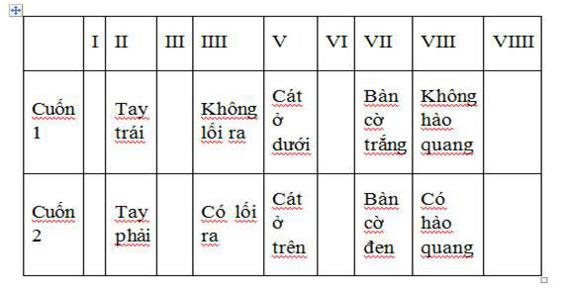
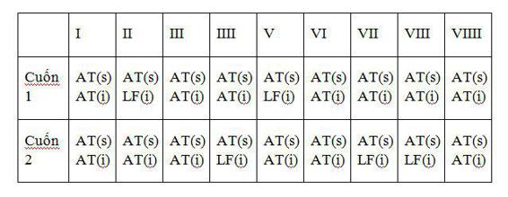

“Có ai không?”
“Không.”
“Tệ quá. Anh ta chắc chết rồi.”
M. Leblanc, ARSÈNE LUPIN.
Lucas Corso biết rõ hơn ai hết rằng một trong những vấn đề chính trong nghề của gã là những cuốn thư mục được biên soạn bởi các học giả chẳng bao giờ nhìn thấy những cuốn sách họ kê tên; thay vào đó họ chỉ dựa vào những báo cáo gián tiếp và thông tin do người khác thu thập. Một sai sót hay một mô tả không trọn vẹn có thể lưu hành qua nhiều thế hệ mà không ai nhận ra. Rồi tình cờ nó lộ ra. Đó chính là trường hợp của Chín cánh cửa. Trừ khi buộc phải đề cập đến nó trong những thư mục chính thức, còn thì ngay cả trong những sách tham khảo chính xác nhất cũng chỉ có mô tả vắn tắt về chín bức tranh khắc minh họa, không có những chi tiết thứ yếu. Trong trường hợp bức họa thứ hai của cuốn sách, toàn bộ các bài viết đều nói đến một lão già trông như một nhà hiền triết hay một ẩn sĩ đứng trước một cánh cửa, tay cầm hai chiếc chìa khóa. Nhưng chưa bao giờ có ai bận tâm đến việc ông ta cầm chìa khóa trên tay nào. Giờ thì Corso đã có câu trả lời: trong cuốn số một, tay trái, còn trong cuốn số hai, tay phải.
Gã còn phải tìm hiểu xem cuốn sổ ba ra sao. Nhưng hiện giờ thì chưa thể. Corso ở lại Quinta de Soledade đến lúc trời tối đen. Gã làm việc liên tục dưới ánh nến, ghi chép đủ thứ, xem xét hai cuốn sách nhiều lần. Gã kiểm tra từng bức vẽ cho đến khi khẳng định được giả thuyết của mình. Thêm nhiều chứng cớ xuất hiện. Cuối cùng gã ngồi ngắm chiến lợi phẩm dưới dạng ghi chú của mình trên trang giấy, bảng chữ và biểu đồ với những gạch nổi kỳ dị giữa chúng với nhau. Có năm bức họa trên hai cuốn sách không giống nhau. Ngoài chi tiết ông già cầm chìa khóa trên hai tay khác nhau, mê cung trên bức tranh số IIII trong một cuốn sách có lối thoát nhưng ở cuốn kia lại không có. Trong bức số V của cuốn số một, cát trong đồng hồ trên tay Thần Chết nằm ở nửa dưới, trong khi ở cuốn hai lại ở nửa trên đồng hồ. Về phần bàn cờ trong bức vẽ số VII, trong bản của Varo Borja các ô vuông toàn trắng, trong khi ở cuốn của Fargas chúng màu đen. Ở bức số VIII, viên đao phủ sắp chặt đầu thiếu phụ trong một cuốn sách biến thành một thiên thần trả thù ở cuốn kia với vầng hào quang trên đầu.
Còn có những sai khác nữa. Kiểm tra kỹ qua kính phóng đại cho những kết quả ngoài dự kiến. Biểu tượng nhà in giấu trong tranh khắc gỗ ẩn chứa một manh mối tinh vi khác. A.T., Aristide Torchia, ký tên thợ khắc ở bức minh họa trong cuốn sách của lão già, nhưng lại là người vẽ bản gốc trong bức họa của cuốn kia, trong khi đó, như anh em Ceniza từng chỉ rõ, chữ ký trong cuốn thứ nhất lại là L.F. Khác biệt tương tự cũng tồn tại trong bốn bức minh họa nữa. Đấy chỉ có thể là do toàn bộ các khuôn khắc gỗ là do người thợ in làm lấy, nhưng các bức họa gốc thì do người khác vẽ ra. Vì vậy vấn đề không phải là sách này làm giả cùng thời kỳ với sách gốc hay với bản lậu của sách gốc. Bản thân người thợ in, Aristide Torchia, “với đặc quyền và sự cho phép của bề trên,” đã sửa đổi công trình của chính mình theo một tính toán từ trước. Ông đã ký tên lên các tranh mà ông đã sửa đổi để nhấn mạnh những bức còn lại là do L.F. làm. Chỉ còn lại một cuốn, ông nói với đao phủ như thế. Nhưng thực tế là ông để lại ba cuốn, cùng với mật mã để quy chúng thành một. Phần còn lại của bí mật thì ông mang theo xuống mồ.
Corso phải dùng tới một phương pháp đối chiếu kiểu cũ: những bảng so sánh Umberto Eco đã dùng trong nghiên cứu về Hanau. Sắp xếp các bức tranh minh họa theo thứ tự trên một trang minh họa theo thứ tự trên một trang giấy, gã có bảng sau:

Còn về dấu của người thợ khắc, những biến hóa giữa các chữ ký A.T. (thợ in, Aristide Torchia) và L.F. (không rõ tên? Lucifer?) tương ứng với sculptor (thợ khắc) hay inventor (người vẽ tranh gốc) được sắp xếp như sau:

Một thứ mã kỳ quái. Nhưng cuối cùng Corso cũng xác định được cái gì đó. Giờ thì gã biết có tồn tại một mật mã ở dạng nào đó. Gã chậm rãi đứng lên, như sợ rằng toàn bộ những mối liên hệ biến mất trước mắt gã. Nhưng gã vẫn lặng yên như một người đi săn tin chắc rồi sẽ tóm được con mồi dù đã lạc mất dấu vết của nó.
Bàn tay. Lối thoát. Cát. Bàn cờ. Hào quang.
Gã liếc nhìn ra ngoài cửa sổ. Bên ngoài những ô kính cáu bẩn in bóng một cành cây, cùng một tia sáng đỏ nhạt không chịu mất dạng trong đêm đen.
Cuốn số 1 và cuốn số 2. Những khác biệt trong bức minh họa số 2, 4, 5, 7 và 8.
Gã phải đi Paris. Cuốn sách số ba ở đó cùng với lời giải mong đợi của điều bí mật. Nhưng lúc này một chuyện khác buộc gã phải giải quyết gấp. Varo Borja rất cương quyết. Bây giờ Corso chắc chắn rằng gã sẽ không thể có được cuốn số hai bằng cách thông thường, gã phải nghĩ ra một thủ đoạn nào đó mới mong giảnh được nó. Với ít rủi ro nhất cho Fargas, và cho chính gã, đương nhiên. Gã lôi cuốn sổ ghi trong túi áo khoác ra tìm số điện thoại gã cần. Đây là công việc tuyệt vời dành cho Amilcar Pinto.
Một ngọn nến cháy hết rồi tắt ngấm sau khi nhả ra một sợi khói ngoằn ngoèo. Tiếng vĩ cầm vang lên đâu đó trong nhà. Corso cười nhạt, ngọn lửa nến bập bùng tạo thành những bóng đen nhảy múa trên mặt gã khi gã cúi xuống châm điếu thuốc lá. Gã đứng thẳng dậy lắng nghe. Âm điệu buồn chơi vơi trong những căn phòng trống tối đen với những mảng sót lại của đồ gỗ mọt ruỗng và bụi bặm, những mảnh trần có tranh vẽ, những bức tường hoen ố đầy mạng nhện và những bóng đen; cùng với tiếng vọng của những bước chân và giọng nói đã câm lặng từ lâu. Bên ngoài, trên những rào chắn han gỉ, một trong hai pho tượng mở to mắt trong bóng tối, pho tượng còn lại giấu mình dưới tấm mạng bằng dây thường xuân, bất động, như thời gian bất động, lắng nghe tiếng đàn của Victor Fargas chiêu hồn những cuốn sách đã qua đời của lão.
CORSO ĐI BỘ quay về làng, hai tay đút trong túi áo khoác, cổ áo kéo cao. Gã phải đi mất hai mươi phút trên con đường vắng. Đêm không trăng, gã lặng lẽ bước qua những mảng đen lớn bên dưới những vòm cây tối tăm. Chỉ có tiếng đế giày nghiến lên những viên sỏi ven đường, cùng tiếng nước chảy từ những dòng kênh len lỏi trong đám thường xuân và những bụi hồng dại trên đồi đêm phá vỡ sự im lặng gần như tuyệt đối.
Một chiếc xe từ phía sau trườn tới rồi vượt qua gã. Corso nhìn thấy cái bóng của chính mình mỗi lúc một lớn với đường nét chập chờn quỷ dị bay qua những thân cây gần đấy tới đám cây cối rậm rạp phía xa xa. Chỉ khi bóng tối lại lần nữa trùm lên gã, Corso mới thở hắt ra và cảm thấy cơ bắp toàn thân chùng xuống. Gã không phải loại người nhìn đâu cũng thấy ma quỷ. Thay vào đó gã quan sát mọi vật, dù rằng chúng kỳ quái đến đâu, với cái nhìn của người lính già phương Nam theo thuyết định mệnh, thứ chủ nghĩa định mệnh mà chắc chắn gã thừa hưởng từ cụ tổ Corso. Cho dù bạn thúc giục con ngựa của mình theo hướng ngược lại bao nhiêu lần đi nữa, định mệnh vẫn luôn rình rập bên cổng thành Samarkand[1] để lột móng của nó với lưỡi lê và dao găm Xcốtlen. Dù là như vậy, kể từ lần gặp nạn trên đường phố Toled, việc Corso cảm thấy lo lắng mỗi khi nghe tiếng xe sau lưng là điều dễ hiểu.
Có lẽ chính vì vậy mà khi một chiếc xe khác ngừng lại bên cạnh, Corso lập tức hất cái túi vải qua vai bên kia và quay lại rất nhanh. Bàn tay gã nắm chặt chùm chìa khóa trong túi áo khoác. Đó chẳng phải là một thứ vũ khí gì ghê gớm, nhưng với nó Corso có thể đâm mù mắt một kẻ tấn công. Nhưng có vẻ như không có lý do gì phải lo lắng. Gã thấy một vật thể đen sẫm to tướng, giống như một cái xe ngựa bốn bánh, và bên trong, gương mặt nhìn nghiêng của một người đàn ông hiện lên dưới ánh sáng nhiều màu yếu ớt của bảng điều khiển. Một giọng nói thân thiện, rất lịch sự cất lên.
“Xin chào…” Ngữ điệu mập mờ, chẳng ra Bồ Đào Nha, cũng chẳng ra Tây Ban Nha. “Ông có diêm không?”
Câu hỏi có lẽ là thật, cũng có lẽ chỉ để viện cớ, Corso không xác định được. Nhưng nếu là hỏi xin lửa, gã không cần phải bỏ chạy hay nắm cái chìa khóa sắc nhọn trong tay. Gã buông chùm chìa khóa, cầm bao diêm, lấy ra một que, quẹt lửa và khum bàn tay che ngọn lửa.
“Cảm ơn.”
Có một vết sẹo, đương nhiên. Một vết sẹo cũ kéo thẳng từ thái dương xuống nửa dưới má trái. Corso có dịp nhìn thật gần khi người đó nghiêng đầu châm điếu xì gà Montecristo. Gã cố giữ ngọn lửa đủ lâu để quan sát bộ ria đen rậm và cặp mắt sẫm màu trong bóng tối đang nhìn gã chằm chằm. Rồi khi ngọn lửa vụt tắt, khuôn mặt nọ giống như bị một cái mặt nạ đen kịt trùm lên trên. Người đó lại trở thành một cái bóng với các đường nét chỉ còn phân biệt lờ mờ dưới ánh sáng yếu ớt của bảng đồng hồ.
“Ông là thứ người quỷ quái gì?”
Không phải là một câu hỏi đặc biệt xuất sắc gì. Dù gì thì cũng quá muộn. Câu hỏi chìm trong tiếng động cơ tăng tốc. Cặp đèn màu đỏ ở đuôi xe lịm dần khi mất hút phía xa, để lại một vệt sáng trên dải đường tối sẫm. Ánh hồng lóe lên trong phút chốc khi chiếc xe qua chỗ đường vòng, rồi biến mất như chưa từng tồn tại.
Corso đứng lặng bên đường, thử tìm cách ráp các mảnh lại thành bức tranh hoàn chỉnh. Madrid, bên ngoài nhà Liana Taillefer. Toledo, lần tới thăm nhà Varo Borja. Và Sintra, sau buổi chiều ở nhà Victor Fargas. Còn cả bộ truyện nhiều kỳ của Dumas, người làm nghề xuất bản treo cổ trong phòng làm việc, người thợ in bị hành hình trên giàn thiêu và cuốn sách kỳ lạ của ông ta… Và xuyên suốt câu chuyện này là một bóng đen luôn ám ảnh Corso: Rochefort, kiếm sĩ huyền thoại thế kỷ mười bảy sống lại dưới bộ dạng một gã tài xế mặc đồng phục, lái những chiếc xe sang trọng. Kẻ chịu trách nhiệm về tai nạn xe cộ có dự mưu rồi bỏ đi hay vụ đột nhập vào nhà. Một gã nghiện xì gà Montecristo. Một kẻ nghiện không mang bật lửa.
Corso khẽ lẩm bẩm chửi thề. Gã sẽ hy sinh một cuốn sách cổ cực hiếm để được đấm vào mặt kẻ soạn ra màn kịch nhố nhăng này, dù đó là bất kỳ ai.
VỀ TỚI KHÁCH SẠN, Corso gọi liền mấy cú điện thoại. Đầu tiên gã quay một số ở Lisbon ghi trong sổ. Gã gặp may. Amilcar Pinto có ở nhà. Gã khẳng định điều đó sau khi trò chuyện với bà vợ khó tính của hắn. Qua cái tai nghe Bakelite đen gã nghe thấy trong âm thanh lao xao từ ti vi có tiếng thét chói tai của bọn trẻ và tiến cãi cọ gay gắt của người lớn. Sau cùng Pinto tới bên máy. Họ đồng ý gặp nhau sau một tiếng rưỡi nữa, đủ thời gian để tay người Bồ Đào Nha vượt năm mươi cây số tới Sintra. Thu xếp xong chuyện này, Corso nhìn đồng hồ rồi gọi cho Varo Borja. Lão không có nhà. Corso để lại lời nhắn trên máy rồi quay số ở Madrid gọi cho Flavio La Ponte. Hắn cũng không ở nhà. Corso giấu cái túi vải trên nóc tủ áo rồi ra ngoài kiếm đồ uống.
Thứ đầu tiên gã trông thấy khi mở cánh cửa vào phòng chờ khách sạn là cô gái. Không thể lẫn được mái tóc cắt ngắn khiến cô giống một cậu còn trai, nước da nâu như thể đang là tháng Tám. Cô ngồi trên ghế bành đọc sách bên ngọn đèn bàn có cái chao hình nón, hai chân duỗi thẳng bắt tréo nhau gác lên ghế đối diện. Chân trần, quần jean, T-shirt vải bông trắng, áo len quấn quanh vai. Corso khựng lại, bàn tay vẫn đặt trên quả đấm cửa, một cảm giác phi lý đột ngột dâng lên trong đầu. Thật quá đáng nếu nói là trùng hợp.
Gã bước về phía cô, đầy ngờ vực. Khi gã tới bên cạnh, cô ngẩng lên nhìn thẳng vào gã bằng đôi mắt xanh sâu thẳm trong veo gã nhớ rất kỹ từ lần đi chung chuyến tàu. Gã dừng lại, không biết nói gì. Gã có cảm giác rất lạ rằng mình sắp chìm nghỉm trong đôi mắt ấy.
“Cô không cho tôi biết cô sẽ tới Sintra,” gã nói.
“Ông cũng vậy.”
Cô trả lời rồi cười dịu dàng, không tỏ ra ngạc nhiên hay bối rối. Có vẻ như cô thực sự vui khi gặp gã.
“Cô làm gì ở đây?” Corso hỏi.
Cô thu chân lại và nghiêng mình nhường chỗ cho gã. Nhưng Corso vẫn đứng.
“Lang thang,” cô gái trả lời và chìa cho gã coi cuốn sách. Không phải cuốn gã thấy trên tàu. Melmoth, kẻ lang thang của Charles Maturin. “Đọc. Và gặp gỡ bất chợt người này người nọ.”
“Bất chợt,” Corso nhắc lại như một tiếng vọng.
Gã đã đụng đầu quá nhiều người trong một đêm, cả bất ngờ lẫn không bất ngờ. Gã thấy mình đang cố thiết lập mối liên hệ giữa sự có mặt của cô trong khách sạn và sự xuất hiện của Rochefort trên đường. Từ góc nhìn hợp lý, mọi thứ hẳn sẽ khớp vào nhau, nhưng gã không sao tìm ra góc nhìn đó. Thậm chí gã không biết bắt đầu từ đâu.
“Sao ông không ngồi xuống?”
Gã ngồi, mơ hồ cảm thấy lo lắng. Cô gái gấp cuốn sách lại rồi nhìn gã tò mò. “Ông không giống người đi du lịch,” cô nói.
“Tôi không đi du lịch.”
“Ông có công chuyện?”
“Phải.”
“Việc gì ở Sintra cũng thú vị.”
Đây là thứ mình cần ư, Corso thầm nghĩ và sửa lại cặp kính. Bị cật vấn sau tất cả những chuyện đã trải qua, dù là do một cô gái rất trẻ, rất đẹp. Có lẽ đó là vấn đề. Cô quá trẻ khó mà gây nguy hiểm. Hoặc có thể đó mới là chỗ nguy hiểm. Gã cầm cuốn sách trên bàn đọc lướt qua. Đó là một cuốn sách tiếng Anh hiện địa, có vài đoạn gạch dưới bằng bút chì. Gã đọc một đoạn:
Đôi mắt hắn nhìn trừng trừng vào ánh sáng ngày một yếu dần và bóng tối ngày một lớn dần. Thứ bóng tối siêu nhiên dường như đang nói với tạo vật tráng lệ và siêu tuyệt nhất của Thượng đế:“Dành chỗ cho tôi. Đừng chiếu sáng nữa.”
“Cô thích tiểu thuyết gô tích?”
“Em thích đọc.” Cô khẽ nghiêng đầu, và ánh sáng tạo thành một đường viền phối cảnh trên cái gáy trần. “Và giữ sách. Em thường mang vài cuốn trong túi khi đi đường.”
“Cô đi nhiều?”
“Phải. Em bắt đầu đi từ lâu rồi.”
Corso khẽ nhăn mặt. Cô nói điều đó nghiêm trang, mày hơi cau lại như một đứa trẻ nói về một chuyện nghiêm túc.
“Tôi tưởng cô là sinh viên.”
“Đôi khi.”
Corso đặt lại cuốn Melmoth lên bàn.
“Cô là một cô gái kỳ lạ. Cô bao nhiêu tuổi? Mười tám? Mười chín? Đôi khi vẻ ngoài của cô thay đổi như thể cô già hơn.”
“Có lẽ em là thế. Bề ngoài của một người chịu tác động của những điều người ấy trải nghiệm và đọc. Cứ nhìn ông mà xem.”
“Có vấn đề gì với tôi?”
“Có bao giờ ông thấy nụ cười của mình không? Ông giống một người lính già.”
Gã khẽ cựa mình trên ghế, lúng túng. “Tôi không biết một người lính già cười thế nào.”
“Em thì em biết.” Mắt cô tối lại. Cô lục lọi trong trí nhớ. “Có một lần em biết mười ngàn người đi tìm biển.”
Corso nhướn một bên mày vẻ chế nhạo. “Thật vậy sao? Cô trải nghiệm hay đọc về điều đó?”
“Phỏng đoán.” Cô ngừng lại nhìn gã chăm chú trước khi bổ sung, “Ông có vẻ là người khôn ngoan, ông Corso.”
Cô đứng lên, nhặt cuốn sách trên bàn và đôi giày thể thao trắng trên sàn. Đôi mắt cô long lanh, và Corso nhìn ra ý nghĩa của nó. Có gì đó thân thuộc trong ánh mắt đăm đăm của cô.
“Có lẽ ta sẽ gặp lại nhau đâu đó,” cô nói trước khi đi.
Corso không nghi ngờ gì điều đó. Gã không rõ mình muốn hay không. Nửa nọ nửa kia, ý nghĩ này chỉ duy trì trong một thoáng. Khi rời đi, cô gái lướt qua Amilcar Pinto ở cửa.
Đó là một người đàn ông thấp nhỏ, mỡ màng. Da đen và bóng như vừa đánh véc ni, bộ ria rậm và thô tỉa vụng. Hắn sẽ là một viên cớm trung thực, hoặc thậm chí là một cảnh sát đắc lực nếu không phải nuôi năm đứa con, một cô vợ và ông bố về hưu thường hay trộm thuốc lá của hắn. Vợ hắn là người lai đen hai mươi năm trước rất đẹp. Pinto mang cô ta từ Mozambique về vào thời nước này đòi độc lập, khi ấy Maputo còn gọi là Lourenco Marques còn chính hắn là một trung sĩ được thưởng huân chương trong đội lính dù, một chàng trai mảnh khảnh và dũng cảm. Trong thời gian hai người thỉnh thoảng hợp tác trong đôi ba vụ làm ăn, Corso đã gặp vợ hắn – đôi mắt thâm quầng mệt mỏi, ngực nhão, dép lê, buộc tóc bằng khăn choàng đỏ - ở hành lang dẫn tới căn hộ đầy mùi trẻ con bẩn thỉu và mùi rau luộc.
Viên cảnh sát đi thẳng vào phòng chờ, liếc nhìn cô gái khi đi qua, rồi gieo mình lên cái ghế bành đối diện với Corso. Hắn thở không ra hơi, cứ như vừa phải đi bộ suốt quãng đường từ Lisbon tới.
“Cô ta là ai?”
“Là ai không quan trọng,” Corso trả lời. “Người Tây Ban Nha. Đi du lịch”
Pinto gật đầu. Hắn chùi bàn tay ẩm ướt vào ống quần. Đó là cử chỉ quen thuộc của hắn. Hắn ra mồ hôi thật nhiều, cổ áo lúc nào cũng có một vòng sẫm ở chỗ tiếp xúc với da.
“Tôi gặp một vấn đề nhỏ,” Corso nói.
Pinto ngoác miệng cười. Không gì không giải quyết được, vẻ mặt hắn nói thế. Chừng nào tôi với anh còn hợp rơ nhau. “Bảo đảm ta sẽ thu xếp đâu vào đấy,” hắn trả lời.
Đến lượt Corso cười. Gã gặp Amilcar Pinto bốn năm trước. Có mấy cuốn sách bị ăn cắp xuất hiện ở hội chợ sách Ladra – thật tệ. Corso tới Lisbon nhận dạng chúng, Pinto xích tay mấy người, và trên đường trở về với chủ nhân của chúng, vài cuốn sách cực kỳ giá trị vĩnh viễn biến mất. Để chúc mừng tình bạn thành công, Corso và Pinto uống với nhau trong quán cà phê nhạc ở Barrio Alto. Viên cựu trung sĩ dù nhớ lại thời còn ở thuộc địa, kể lại vì sao suýt nữa hắn bị bay mất hai cái hòn trong trận Gorongosa. Hai người kết thúc bằng bài “Grândola Vila Morena”[2] gào hết cỡ trên Santa Luzia. Dưới ánh trăng, quận Alfama trải dài dưới chân họ, xa xa dòng Tagus mênh mông lấp lánh như một dải lụa bạc. Những bóng thuyền đen thẫm chậm chạp trôi theo hướng tháp Belem và Đại Tây Dương.
Người phục vụ mang cà phê tới cho Pinto theo yêu cầu của hắn. Corso không nói gì cho đến khi người đó đi khỏi.
“Là về một cuốn sách.”
Viên cảnh sát nghiêng mình trên cái bàn nhỏ, bỏ đường vào ly cà phê.
“Bao giờ cũng là về một cuốn sách,” hắn trầm giọng nói.
“Cuốn này đặc biệt.”
“Cuốn nào mà chẳng đặc biệt?”
Corso cười sắc lạnh. “Ông chủ không muốn bán.”
“Thế thì tệ thật.” Pinto uống một ngụm rồi thưởng thức hương vị cà phê. “Mua bán là chuyện tốt. Hàng hóa luân chuyển, đến và đi. Tạo ra của cải, đem lại tiền bạc cho người đứng giữa…” Hắn đặt cốc xuống rồi chùi hai tay vào quần. “Sản phẩm phải được lưu thông. Đấy là quy luật của thị trường, của cuộc sống. Không bán là phải bị cấm: nó gần như một tội ác.”
“Đồng ý,” Corso nói. “Ta cần làm gì đó với nó.”
Pinto lại ngả người trên ghế. Điềm đạm và tự tin, hắn nhìn Corso vẻ chờ mong. Một lần, sau một trận phục kích trong rừng ở Mozambique, hắn trốn thoát, mang theo một sĩ quan hấp hối vượt qua mười cây số rừng rậm. Rạng sáng hắn biết viên sĩ quan đã chết, nhưng không muốn bỏ anh ta lại. Vì vậy hắn tiếp tục cõng cái xác về đến căn cứ. Viên trung úy còn rất trẻ, và Pinto nghĩ rằng bà mẹ hẳn sẽ muốn anh ta được chôn cất ở Bồ Đào Nha. Người ta cho hắn một tấm huân chương vì chuyện đó. Bây giờ lũ trẻ nhà Pinto chơi quanh nhà với tấm huân chương cũ kỹ.
“Có thể anh biết ông ta: Victor Fargas.”
Viên cảnh sát gật đầu. “Fargas là một dòng họ danh giá, rất lâu đời,” hắn nói. “Trong quá khứ họ có rất nhiều ảnh hưởng, giờ thì chẳng còn gì.”
Corso đưa cho hắn một phong bì dán kín. “Đây là toàn bộ thông tin anh cần: ông chủ, cuốn sách và vị trí.”
“Tôi biết ngôi nhà đó.” Pinto liếm liếm môi trên, thấm ướt bộ ria. “Rất dại dột, để bao nhiêu sách quý ở đó. Bất cứ một thằng vô lại nào cũng có thể lẻn vào.” Hắn nhìn Corso như lấy làm buồn vì sự vô trách nhiệm của Victor Fargas. “Tôi nhắm được một người, một gã trộm vặt ở Chicago, gã nợ tôi một chút ân huệ.”
Corso rũ những hạt bụi vô hình trên quần áo. Chuyện này chẳng liên quan gì tới gã. Trong giai đoạn tiến hành thực tế thì không.
“Tôi không muốn có mặt gần đó khi chuyện xảy ra.”
“Đừng lo. Anh sẽ có cuốn sách, còn ngài Fargas sẽ gặp ít phiền phức nhất. Quá lắm là một ô kính cửa sổ vỡ. Sẽ là một vụ sạch sẽ. Còn chi phí…”
Corso trỏ cái phong bì chưa mở trong tay Pinto. “Đấy là khoản đặt trước, một phần tư tổng số. Phần còn lại lấy lúc giao hàng.”
“Tốt. Khi nào anh đi?”
“Sáng mai, ngay khi có thể. Tôi sẽ liên lạc với anh từ Paris.” Pinto chuẩn bị đứng lên, nhưng Corso ngăn hắn lại. “Còn một chuyện nữa. Tôi cần nhận dạng một người. Cao khoảng hơn mét tám, để ria, một vết sẹo trên mặt. Tóc đen, mắt đen. Gầy. Không phải người Tây Ban Nha hay Bồ Đào Nha. Đêm nay hắn lẩn khuất đâu đó quanh đây.”
“Hắn thuộc loại nguy hiểm?”
“Không biết. Hắn theo tôi từ Madrid.”
Pinto ghi lên mặt sau cái phong bì. “Chuyện này có liên quan gì đến công việc của chúng ta không?”
“Tôi nghĩ là có. Nhưng tôi không biết gì hơn.”
“Tôi sẽ làm chuyện có thể làm. Tôi có bạn ở đồn cảnh sát khu vực Sintra. Và tôi sẽ kiểm tra tài liệu tại trung tâm chỉ huy ở Lisbon.”
Hắn đứng dậy nhét phong bì vào túi trong áo khoác. Corso thoáng thấy khẩu súng ngắn trong bao nằm dưới nách trái hắn.
“Anh không ở lại uống chút gì ư?”
Pinto thở dài lắc đầu. “Tôi muốn lắm, nhưng ba đứa trẻ nhà tôi lên sởi. Lũ chó con cứ theo nhau từng đứa một.” Hắn mỉm cười mệt mỏi. Mọi người hùng trong thế giới của Corso đều mỏi mệt.
Họ cùng nhau tới chỗ chiếc Citroẽn hai ngựa cũ kỹ của Pinto đậu ở cửa khách sạn. Khi bắt tay nhau, Corso lại nhắc với Fargas.
“Hãy bảo đảm rằng Fargas bị quấy rầy ít nhất. Đây chỉ là một vụ trộm.”
Pinto khởi động xe và bật đèn. Hắn nhìn Corso vẻ trách móc qua cửa sổ mở. Gần như bị xúc phạm. “Xin anh. Không cần nhắc tôi nữa. Tôi biết tôi đang làm gì.”
SAU KHI PINTO ĐI RỒI, Corso lên phòng sắp xếp lại những ghi chép của mình. Gã làm việc đến khuya, cái giường đầy giấy tờ và Chín cánh cửa để mở trên gối. Gã cảm giác vô cùng mệt mỏi và nghĩ giờ mà được tắm nước nóng dưới vòi sen một cái thì chắc sẽ hết căng thẳng. Chuông điện thoại vang lên khi gã sắp vào buồng tắm. Đó là Varo Borja, lão muốn biết gã sẽ thu xếp thế nào với Fargas. Corso cho lão biết đại khái về mọi việc đang diễn ra, bao gồm cả sự không thống nhất ở năm trong số chín bức minh họa.
“Nhân tiện cho ông biết,” gã thêm, “ông bạn Fargas của chúng ta không muốn bán.”
Có một khoảng im lặng ở đầu dây bên kia. Có vẻ Borja đang suy nghĩ, mặc dù không thể xác định lão nghĩ về những bức họa hay về việc Fargas không chịu bán sách. Khi lão lại lên tiếng, giọng lão nghe vô cùng thận trọng.
“Chuyện đó thì có thể mà,” lão nói và Corso vẫn không biết lão ám chỉ việc nào. “Có cách nào giải quyết ‘vấn đề’ hay không?”
“Có lẽ có.”
Borja lại im lặng. Corso đếm được năm giây trên đồng hồ của gã.
“Tôi để tùy anh định liệu.”
Sau đó họ không nói thêm gì mấy. Corso không nhắc tới cuộc trò chuyện với Pinto, Borja cũng chẳng hỏi Corso giải quyết “vấn đề” bằng cách nào, như cách lão nói mập mờ trước đó. Lão chỉ hỏi Corso có cần thêm tiền không, nhưng Corso nói không. Hai người thỏa thuận sẽ nối lại liên lạc khi Corso tới Paris.
Sau đấy Corso lại quay số gọi cho La Ponte, nhưng vẫn không có người thưa máy. Những trang màu xanh trong bản thảo Dumas vẫn nằm trong tệp. Gã nhặt những tờ ghi chép và cuốn sách bìa da đen với biểu tượng ngôi sao trên bìa, cho cả vào cái túi vải buồm rồi đẩy nó xuống gầm giường, buộc quai đeo vào chân giường. Như vậy nếu có người vào phòng với ý đồ mang nó đi, hắn sẽ phải đành thức Corso dù gã đang ngủ. Chẳng thà thế còn hơn là tha một kiện hành lý lôi thôi đi khắp nơi, gã tự nhủ khi bước vào nhà tắm bật vòi sen. Và vì lý do nào đó, cũng nguy hiểm.
Gã đánh răng. Rồi cởi quần áo quăng trên sàn. Mặt gương bám đầy hơi nước, nhưng gã vẫn có thể thấy mình trong đó, gầy gò gần guốc như một con sói đói. Gã cảm thấy nỗi nhớ mong từ quá khứ xa xăm một lần nữa dội lên như một làn sóng đau khổ tràn ngập cả tâm trí. Giống như một sợi dây đàn rung lên trong thân xác và ký ức gã. Nikon. Gã nhớ nàng mỗi khi gã cởi thắt lưng. Nàng luôn khăng khăng đòi tháo nó cho gã, như thể đó là một điều thiêng liêng. Gã nhắm mắt lại là thấy nàng ngồi bên mép giường trước mặt, chậm rãi kéo quần dài, rồi quần lót cho gã, cười dịu dàng và bí ẩn như đang thưởng thức khoảng khắc ấy. Đừng căng thẳng, Lucas Corso. Một lần nàng bí mật chụp ảnh khi gã ngủ. Gã nằm úp mặt xuống với vết nhăn chạy dọc xuống trán và hai má râu đen lởm chởm. Nó làm cho nếp nhăn căng thẳng và cay đắng trên cái miệng hé mở. Trên đệm gối gã giống như một con sói kiệt sức, nghi ngờ và đau khổ giữa đồng hoang tuyết trắng. Gã không thích tấm ảnh. Gã tìm thấy nó trong khay thuốc hãm trong phòng tắm, nơi Nikon dùng làm buồng tối. Gã xé cả ảnh lẫn phim âm bản thành từng mảnh. Sau đó nàng không bao giờ nhắc tới nó nữa.
Trong phòng tắm, nước nóng khiến gã bỏng rát. Gã để cho dòng nước chảy tràn trên mặt, mặc kệ mi mắt nóng giãy. Gã ráng chịu cơn đau, quai hàm nghiến chặt, toàn thân cơ bắp căng lên, cố ghìm để khỏi gào lên vì cô đơn trong làn hơi nước khiến gã ngạt thở. Trong bốn năm, một tháng, mười hai ngày, sau khi làm tình, Nikon thường vào nhà tắm xoa xà phòng lên lưng cho gã, từ từ, vô tận. Rồi nàng dang tay ôm gã, giống như một cô gái nhỏ trong mưa. Rồi một ngày em sẽ đi xa mà vẫn chưa thực sự hiểu anh. Anh sẽ nhớ đôi mắt em to đen. Những im lặng oán hờn. Những tiếng than thở lo âu trong giấc ngủ. Những cơn ác mộng trong đó anh không bảo vệ được em. Anh sẽ nhớ tất cả khi em đã ra đi.
Gã tựa đầu trên những tấm gạch lát màu trắng đang rỏ nước, trong một sa mạc bốc hơi ngùn ngụt giống như địa ngục. Từ khi Nikon ra đi đến nay chưa hề có ai xoa xà phòng lên lưng cho gã. Không một ai. Chưa một lần nào.
Tắm xong gã chui vào giường với cuốn Hồi ký đảo Sainte Hélène nhưng chỉ đọc mấy dòng:
Trở lại với chủ đề chiến tranh, Hoàng đế tiếp tục: “Người Tây Ban Nha nhìn chung là những người trọng danh dự.”
Gã nhăn mặt với lời khen ngợi của Napoléon từ hai thế kỷ trước. Nhớ đến câu nói gã nghe khi còn nhỏ, có lẽ là của ông nội hay ông ngoại hay của cha gã. “Có một chuyện mà người Tây Ban Nha chúng ta làm rất tốt hơn người khác, là xuất hiện trong tranh Goya.” Những người trọng danh dự, Bonaparte nói thế. Corso nghĩ về Borja và cuốn séc của lão. Về La Ponte và thư viện của người đàn bà góa bị cướp đoạt vì món lợi nhuận cỏn con. Về linh hồn Nikon lang thang trong sa mạc cát trắng hoang vắng. Về chính gã, người thợ săn làm thuê cho kẻ trả nhiều tiền nhất. Đấy là những lần khác nhau.
Gã ngủ thiếp đi, trên miệng còn vương nụ cười cay đắng và tuyệt vọng.
KHI TỈNH DẬY, thứ đầu tiên gã nhìn thấy là ánh rạng đông xám xịt rọi qua cửa sổ. Quá sớm. Gã loay hoay hồi lâu tìm đồng hồ trên cái bàn đầu giường thì mới nhận ra chuông điện thoại đang reo. Hai lần gã để rơi cái tai nghe trước khi nhét được nó vào giữa cái gối và tai gã.
“A lô?”
“Một người bạn hồi đêm qua của ông. Nhớ không? Irene Adler. Em đang ngoài hành lang. Ta cần nói chuyện. Ngay bây giờ.”
“Quỷ tha ma bắt…”
Nhưng cô đã gác máy. Corso vừa chửi vừa tìm cặp kính. Gã hất chăn ra và kéo quần lên, loạng choạng và bối rối. Chợt gã hoảng hốt nhìn xuống gầm giường. Cái túi còn nguyên. Gã cố tập trung chú ý nhìn xung quanh. Mọi thứ trong buồng vẫn ngăn nắp. Chuyện gì đấy đang xảy ra là ở bên ngoài. Gã chỉ đủ thời gian vào buồng tắm để vã nước lên mặt khi cô gõ cửa.
“Cô biết giờ là mấy giờ không?”
Cô đứng đó với cái áo len thô màu xanh và cái túi trên lăng. Mắt cô còn xanh hơn đôi mắt trong trí nhớ của gã.
“Sáu giờ rưỡi sáng,” cô bình tĩnh nói. “Và ông phải mặc ngay quần áo vào.”
“Cô điên à?”
“Không.” Cô bước vào buồng chẳng đợi mời và liếc quanh với ánh mắt phê phán. “Chúng ta không có nhiều thời gian.”
“Chúng ta?”
“Ông và em. Chuyện phiền phức lắm.”
Corso khịt mũi giận dữ. “Đùa giờ này là sớm quá đấy.”
“Đừng ngốc nữa.” Cô nhăn mũi với vẻ nghiêm trọng. Mặc dù vẫn trẻ trung và giống con trai, giờ trông cô khác hơn, già dặn và tự tin hơn. “Em nói nghiêm túc.”
Cô đặt túi đeo trên cái giường bừa bộn. Corso cầm nó lên đưa cô và trỏ cánh cửa.
“Biến đi,” gã nói.
Cô vẫn đứng yên nhìn gã chăm chú. “Nghe đây.” Đôi mắt cô ở rất gần, giống như bằng tinh thể lỏng sáng rực lên làn da rám nắng. “Ông biết Victor Fargas là ai không?”
Corso nhìn thấy qua vai cô khuôn mặt gã trong gương, bên trên cái tủ com mốt. Mồm há ra như một tên khờ.
“Tất nhiên.”
Phải sau mấy giây gã mới trả lời được trong khi còn đang ngơ ngác và bối rối. Cô đợi, không hài lòng lắm với phản ứng của gã. Rõ ràng cô đang nghĩ đến chuyện khác.
“Ông ta chết rồi,” cô nói.
Cô nói với giọng dửng dưng, như thể chỉ cho gã biết là Fargas đi uống cà phê hay đi chữa răng. Corso hít một hơi dài, cố hiểu xem cô vừa nói gì. “Không thể thế được. Tối qua tôi ở chỗ ông ta. Ông ta vẫn ổn.”
“Bây giờ thì không. Không ổn tí nào.”
“Làm sao cô biết?”
“Chỉ vừa mới thôi.”
Corso lắc đầu ngờ vực, rồi đi tìm một điếu thuốc. Giữa chừng, trông thấy chai Bols, gã liền làm một tợp. Rượu gin xộc vào dạ dày rỗng khiến gã rùng mình. Gã đợi, cố ép mình không nhìn cô chừng nào chưa nuốt xong ngụm khói đầu tiên. Gã không khoái chút nào vai diễn gã buộc phải nhận buổi sáng hôm nay. Gã cần thời gian để nghĩ.
“Quán cà phê ở Madrid, trên tàu, và sáng nay ở Sintra…” Gã duỗi từng ngón tay bên trái ra đếm, điếu thuốc trên môi, mắt lim dim trong khói thuốc. “Nhiều trùng hợp, cô có nghĩ thế không?”
Cô lắc đầu sốt ruột. “Em cứ nghĩ ông thông minh hơn. Có ai nói gì về những trùng hợp đâu?”
“Tại sao cô theo tôi?”
“Em thích ông.”
Corso chẳng cảm thấy có gì vui vẻ. Gã nhăn nhó. “Thật lố lăng.”
Cô nhìn gã một lượt, sâu lắng.
“Chắc thế,” sau cùng cô nói. “Ông thì không hấp dẫn mấy đâu, đặc biệt là trong cái áo khoác cũ và cặp kính đó.”
“Vậy thì sao?”
“Tìm câu trả lời khác đi. Gì cũng được. Nhưng giờ thì ông mặc quần áo vào chứ? Chúng ta phải đến nhà Fargas.”
“Chúng ta?”
“Ông và em. Trước khi cảnh sát tới.”
LÁ KHÔ LẠO XẠO DƯỚI CHÂN khi họ đẩy cánh cửa sắt bước theo lối đi hai bên là hai hàng tượng vỡ và bệ đá trống trơ. Ánh sáng buổi sớm âm u không để lại cái bóng nào, đồng hồ mặt trời bên trên bậc thềm đá vẫn không chỉ giờ. POSTUMA NECAT. Giờ cuối sát nhân, Corso đọc. Cô gái nhìn theo ánh mắt gã.
“Tuyệt đối đúng,” cô lạnh lùng nói rồi đẩy cửa. Nó bị khóa.
“Thử vòng phía sau xem,” Corso đề nghị.
Họ đi vòng quanh nhà, vượt qua vòi phun nước với thiên thần bằng đá mũm mĩm, đôi mắt trống rỗng và hai tay cụt vẫn để nước rỏ giọt từ miệng mình xuống hồ nước. Bình tĩnh một cách đáng kinh ngạc, cô – Irene Adler hay tên gì cũng được – vượt lên trước trong cái áo len thô và ba lô trên lưng. Cô bước đi, cặp chân dài mềm mại mang quần jean, cái đầu ương ngạch nghiêng về đằng trước với vẻ kiên quyết của một người biết chắc mình muốn tới đâu. Không như Corso. Gã đã vượt qua nỗi nghi ngờ mà để cô dẫn dắt. Những câu hỏi tạm gác lại đó. Đầu óc nhanh nhẹn hẳn lên sau khi tắm vội dưới vòi sen, mang theo toàn bộ những thứ gã thấy là quan trọng trong cái túi, bây giờ ngoài Chín cánh cửa của Victor Fargas, cuốn số 2, gã chẳng nghĩ đến thứ gì khác.
Họ dễ dàng leo qua cái cửa sổ kiểu Pháp từ ngoài vườn thẳng vào phòng khách. Trên trần, Abraham tay cầm con dao giơ cao, đưa mắt nhìn xuống đống sách xếp gọn trên sàn. Trong nhà hình như không có người.
“Fargas đâu?” Corso hỏi.
Cô gái nhún vai. “Em đâu biết.”
“Cô nói ông ta đã chết.”
“Đúng.” Sau khi nhìn quanh, nhìn những bức tường trống và những cuốn sách, cô tò mò cầm cây vĩ cầm trong ngăn tủ lên xem. “Điều em không biết là ông ta ở đâu.”
“Cô nói dối.”
Cô áp cây đàn vào má, lấy ngón tay gảy mấy sợi dây rồi trả nó về chỗ cũ, có vẻ như không vừa lòng với âm thanh của nó. Rồi cô nhìn Corso.
“Kìa, em nói thật mà.”
Cô mỉm cười, xa vắng. Trước Corso, vẻ bình thản của cô, già dặn thành thục một cách không hợp lẽ, dường như vừa sâu sắc lại vừa nông nổi. Cô gái này xử sự như theo một quy luật lạ lùng dẫn dắt, giống như bị đưa đẩy bởi những điều phức tạp hơn so với lứa tuổi và vẻ ngoài của cô.
Bỗng nhiên những ý nghĩ này – cô gái, những sự kiện kỳ bí, thậm chí cả cái xác giả định của Victor Fargas – hết thảy đều biến mất khỏi tâm trí Corso. Trên tấm thảm xơ xác thêu trận chiến ở Arbelas, giữa những cuốn sách về ma thuật và huyền học, gã thấy một chỗ trống. Chín cánh cửa không còn nữa.
“Cứt,” gã thốt lên.
Gã quỳ xuống bên đám sách xếp thành hàng và lại một lần nữa lẩm bẩm chửi. Ánh mắt chuyên nghiệp của gã dừng lại rất nhanh ở một cuốn sách, trở đi rồi trở lại, chẳng ích gì. Da Marốc đen, năm dải băng nổi, bên ngoài không nhan đề, hình dập ngôi sao trên bìa. Umbrarum regni, vân vân. Gã không lầm. Một phần ba của điều bí ẩn, chính xác là ba mươi ba lẻ vô cùng tận số ba phần trăm, đã tan biến.
“Cứt thật.”
Không thể là Pinto, hắn không đủ thì giờ bố trí. Cô gái nhìn như chờ đợi gã làm gì đấy thú vị. Corso đứng lên.
“Cô là ai?”
Đó là lần thứ hai trong vòng chưa tới mười hai giờ gã hỏi câu đó, nhưng với hai người khác nhau. Mọi chuyện trở nên phức tạp quá nhanh. Cô gái lẳng lặng nhìn Corso, không phản ứng gì trước câu hỏi. Một hồi sau, cô quay đi nhìn cái khe trống rỗng. Cũng có thể là những cuosn sách trên sàn.
“Chuyện đó chẳng quan trọng gì,” cô trả lời. “Tốt hơn cả là ông quên chuyện đó và nghĩ xem cuốn sách chạy đi đâu.”
“Cuốn sách nào?”
Cô nhìn gã im lặng. Gã thấy mình ngớ ngẩn không tưởng tượng được.
“Cô biết quá nhiều,” gã nói. “Thậm chí hơn cả tôi.”
Cô lại nhún vai. Đưa mắt nhìn đồng hồ trên tay Corso.
“Ông không còn nhiều thời gian.”
“Tôi đếch quan tâm mình có bao nhiêu thời gian.”
“Tùy ông. Nhưng năm giờ nữa có một chuyến bay Lisbon đi Paris, từ sân bay Portela. Chúng ta chỉ có thể đi chuyến đó.”
Trời ạ. Corso rùng mình kinh sợ. Cô giống như một thư ký đắc lực, thời gian biểu trong tay, liệt kê những cuộc hẹn trong ngày của ông chủ. Gã há miệng toan trách móc. Mà lại trẻ trung đến thế, với đôi mắt khiến lòng người xao xuyến thế. Cô phù thủy bé bỏng chết giẫm.
“Tại sao tôi phải đi ngay?”
“Vì cảnh sát có thể tới.”
“Tôi chẳng có gì phải giấu giếm.”
Cô gái cười mơ hồ, như thể vừa nghe một câu đùa quá cũ. Quàng cái ba lô lên vai, cô vẫy chào từ biệt.
“Em sẽ gửi thuốc lá vào tù cho ông. Mặc dù loại thuốc này không có bán ở Bồ Đào Nha.”
Cô trở ra theo lối khu vườn, không hề quay lại nhìn căn buồng. Corso đã toan đi theo ngăn cô lại. Chợt gã thấy có gì đó trong lò sưởi.
Sau một thoáng ngờ vực, gã bước tới. Rất từ từ, như muốn cho mọi thứ có thể trở lại bình thường. Nhưng khi tới gần và cúi mình trên bệ lò sưởi, gã mới nhận ra rằng tổn thất là không thể bù đắp nổi. Trong khoảng thời gian ngắn ngủi từ đêm qua đến sáng nay, một khoảnh khắc không đáng gì so với hàng thế kỷ tồn tại của chúng, các cuốn thư mục sách cổ đã trở thành lỗi thời. Bây giờ còn lại không phải ba cuốn Chín cánh cửa mà chỉ là hai. Cuốn thứ ba, hay phần còn lại của nó đang cháy âm ỉ trên đám than hồng.
Gã quỳ xuống, thận trọng để không đụng vào thứ gì. Tấm bìa, hẳn là vì được bọc da, bị hư hại ít hơn những trang bên trong. Hai trong năm dải băng nổi trên gáy sách còn nguyên vẹn, và cái biểu tượng khắc chìm mới cháy một nửa. Nhưng các trang hầu hết bị ngọn lửa tàn phá. Chỉ còn lại mấy mảnh vụn bên lề cháy sém, với dăm ba con chữ. Gã để bàn tay mình lơ lửng bên trên những tàn tích còn ấm.
Rút ra một điếu thuốc trên môi, nhưng gã không châm lửa. Gã vẫn nhớ những thanh củi xếp đặt như thế nào trong lò sưởi đêm hôm qua. Từ tình trạng của đống tro tàn – những thanh củi cháy nằm dưới tàn tro của cuốn sách, còn chưa có ai cời than – có thể thấy là ngọn lửa đã cháy đến hết với cuốn sách nằm trên. Gã nhớ rằng số lượng củi đủ để duy trì ngọn lửa chừng bốn đến năm tiếng. Và độ nóng của tro cho thấy ngọn lửa đã tắt cũng ngần ấy tiếng đồng hồ trước. Tổng cộng là từ tám đến mười tiếng trước. Hẳn có ai đấy nhóm lò sưởi vào khoảng từ mười đến mười hai giờ đêm, rồi quẳng cuốn sách vào lò. Và dù là ai thì sau khi đã làm vậy rồi cũng sẽ không ở loanh quanh đấy để cời lửa.
Corso dùng một tờ báo cũ bọc những phần còn sót lại mà gã cứu được từ trong lò sưởi. Những mẩu giấy còn sót lại giòn rụm, rất dễ nát vụn, khiến gã khá mất công. Trong lúc làm việc này, gã nhận ra rằng các trang sách và trang bìa cháy riêng rẽ. Ai đó đã xé chúng ra khi ném vào lò để cho dễ cháy.
Sau khi thu thập hết mọi thứ, gã ngừng lại nhìn quanh buồng. Cuốn của Virgil và Agricola vẫn ở chỗ cũ. De re metalica xếp cùng những cuốn khác trên thảm còn Virgil trên bàn đúng như khi Fargas để chúng ở đó và cất giọng như linh mục trong buổi lễ hiến tế: “Tôi nghĩ tôi sẽ bán cuốn này…” Có một tờ giấy kẹp giữa những trang sách. Corso mở cuốn sách. Đó là một tờ phiếu thu viết tay, chưa hoàn thành.
Victor Coutinho Fargas, căn cước số 3554712, địa chỉ Quinta de Soledade, Carretera, cây số 4, Sintra. Cảm tạ đã nhận được số tiền 800 ngàn escudo cho cuốn sách thuộc sở hữu của tôi, “Virgil. Opera nunc recens accuratissime castigata… Venice, Giunta, 1544.” (Essling 61. Sander 7671.) Folio, 10.587, 1c, 113 tranh khắc gỗ. Tình trạng tốt và đầy đủ.
Người mua…
Không có tên người mua hay chữ ký. Phiếu thu sẽ vĩnh viễn không hoàn chỉnh. Corso để tờ giấy vào chỗ cũ rồi gấp cuốn sách lại. Sau đó gã tới căn phòng chiều hôm trước để chắc chắn mình không để lại dấu vết gì, không còn tờ giấy nào có bút tích của gã hay gì đấy như vậy. Gã nhặt hết những đầu mẩu thuốc lá trong gạt tàn, gói cả vào một mẩu báo cũ cho vào túi. Gã nhìn quanh thêm lát nữa. Tiếng chân gã vang trong căn nhà trống. Không thấy dấu hiệu gì của chủ nhân.
Khi một lần nữa đi qua chỗ sách trên sàn, gã dừng lại, thèm thuồng. Thật dễ dàng và thuận tiện – mấy cuốn khổ nhỏ của nhà Elzevir lôi cuốn gã. Nhưng Corso là người nhạy cảm. Làm thế thì mọi chuyện chỉ càng thêm phức tạp nếu mọi chuyện xấu đi. Vì vậy, gã đành chia tay bộ sưu tập Fargas với một tiếng thở dài.
Qua cái cửa kiểu Pháp ra ngoài vườn đi tìm cô gái, lê chân trên đám lá rụng, gã thấy cô đang ngồi trên một bậc thang thấp hướng ra cái ao. Gã nghe tiếng nước rỏ giọt từ miệng thiên thần mũm mĩm xuống mặt nước màu xanh phủ đầy cây thủy sinh. Cô đang mê mải nhìn xuống ao. Tiếng chân gã kéo cô ra khỏi trầm tư, khiến cô quay đầu lại.
Corso đặt cái túi vải xuống chân bậc thềm và ngồi xuống bên cô. Gã châm điếu thuốc vẫn gắn trên môi từ nãy giờ. Nuốt một hơi khói, nghiêng đầu, gã vứt que diêm đi. Rồi quay lại cô.
“Giờ thì hãy cho tôi biết mọi thứ.”
Vẫn chăm chú nhìn xuống ao, cô khẽ lắc đầu. Không bất ngờ, cũng không khó chịu. Ngược lại, cử động của đầu cô, má cô và khóe miệng cô thật ngọt ngào và ân cần, như thể sự có mặt của Corso, khu vườn u sầu bị bỏ quên và âm thanh của nước đều đang chuyển động một cách kỳ dị. Trông cô trẻ đến mức khó tin. Hầu như không có sức tự vệ. Và hết sức mệt mỏi.
“Chúng ta phải đi,” cô nói khẽ đến mức Corso chỉ vừa nghe thấy. “Paris.”
“Đầu tiên hãy nói với tôi quan hệ của cô với Fargas như thế nào. Sau tất cả những chuyện này.”
Cô lại lắc đầu im lặng. Corso nhả ra một ngụm khói. Không khí ẩm đến mức làn khói lơ lửng trước mặt gã một lúc trước khi từ từ tan biến. Gã nhìn cô gái.
“Cô biết Rochefort?”
“Rochefort?”
“Bất kể tên hắn là gì. Da đen, một vết sẹo. hắn lẩn lút quanh đây đêm qua.” Nói đến đây, Corso chợt thấy tất cả chuyện này mới ngớ ngẩn làm sao. Gã kết thúc bằng một cái nhăn mặt nghi ngờ trí nhớ của chính mình. “Thậm chí tôi đã nói chuyện với hắn.”
Cô gái lại lắc đầu, vẫn nhìn ra ao chăm chú.
“Em không biết hắn.”
“Vậy cô làm gì ở đây?”
“Theo ông.”
Corso nhìn chằm chặp vào mũi giày của gã, xoa hai bàn tay tê cóng. Tiếng nước rỏ tí tách xuống ao bắt đầu khiến đầu óc gã căng thẳng. Gã rít hơi thuốc cuối cùng. Khói thuốc đắng ngắt và môi gã bỏng giãy.
“Cô điên rồi, cô bé.”
Gã ném đầu mẩu thuốc ra xa, chằm chằm nhìn làn khói mờ dần trước mắt.
“Cực kỳ điên,” gã thêm.
Cô vẫn không nói gì. Sau một thoáng, Corso lấy chai gin ra tợp một hơi dài, không hề mời cô. Gã lại nhìn cô lần nữa.
“Fargas đâu?”
Vẫn chìm đắm, trầm tư, phải một phút sau cô mới trả lời. Bằng cách hất cằm. “Kia.”
Corso dõi theo ánh mắt cô. Giữa ao, dưới dòng nước chảy ra từ miệng thiên thần cụt tay với đôi mắt trống rỗng, hình dáng lờ mờ của một người đàn ông úp mặt xuống nước, lập lờ trong đám cây hoa súng và lá chết.
-----------------------
[1] Samarkand: thành phố cổ ở Uzbekistan, án ngữ con đường tơ lụa trong vai trò cửa ngõ nối liền Trung Hoa cổ và phương Tây.
[2] Grândola Vila Morena: bài hát cách mạng của Bồ Đào Nha, nói về tình anh em của những người dân thị trấn Grândola, vùng Alentejo, từng bị cấm dưới chế độ độc tài Salazar (1932-1968).